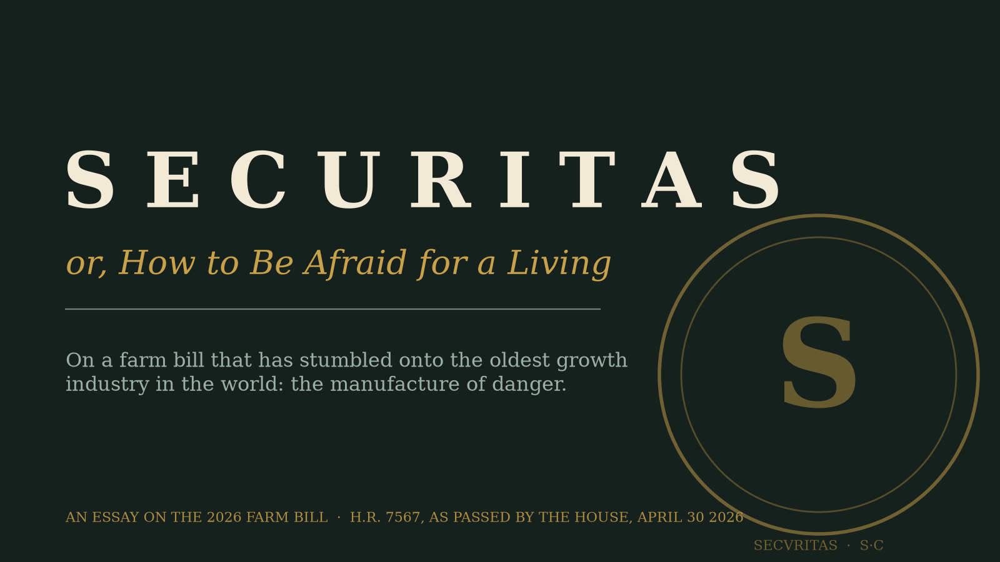
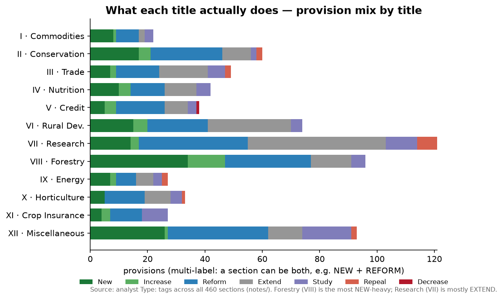
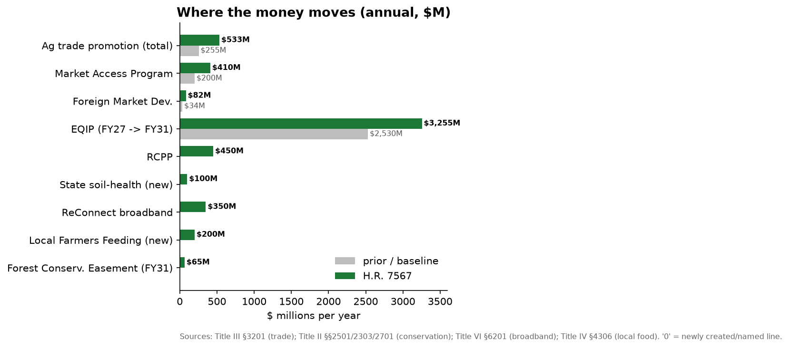
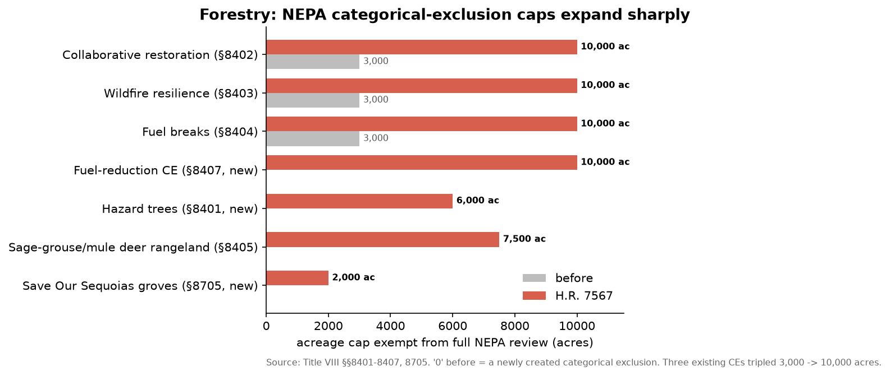

H.R. 7567, the Farm, Food, and National Security Act of 2026 — the text the House passed on 30 April 2026 and sent to a Senate that has not taken it up.
When the Roman state was at its least secure — legions mutinying, frontiers dissolving, emperors enjoying reigns measured in weeks — its mints went into overtime stamping a particular goddess onto the coinage. Her name was Securitas. She leaned on a column, ankles crossed, the very picture of someone with nothing on her mind, and she turned up most dependably in precisely those decades when no Roman with a working pulse felt secure about anything at all. The coin was not a description; it was a prescription, pressed into the palm along with the silent instruction feel this. The genius of empire was never the legion. It was the knack for assuring a frightened people that they were safe and a comfortable people that they were besieged — and invoicing both for the service.
I have been reading the Securitas of our own late republic. It runs to several hundred pages.
It is called the Farm, Food, and National Security Act, and one really must dwell on the noun, because it keeps a secret. Security descends to us from the Latin se-, without, and cura, care: securus, free of care, the blessed condition of the man with nothing nagging at him. Which makes the title a small accidental masterpiece, for the bill is the most careful document conceivable — six hundred pages of pure care, a fretwork of anxieties so dense it constitutes a new literary genre. It does not supply carelessness. It manufactures care, by the clause, and then presents itself as the only known antidote. This is not a contradiction. It is a business model.
It does not supply carelessness. It manufactures care, by the clause, and then presents itself as the only known antidote.
Permit me a partial inventory of the newly dangerous, drawn entirely from the text. A soybean field, if the wrong person holds the deed. A school lunch, if the chicken summered abroad. The cells inside a rooftop solar panel. A carton of milk. A grove of trees that has been minding its own business since before Rome. A shrimp. Reader: a shrimp. One reads down the catalogue of menaces rather as one reads a medieval bestiary — the basilisk, the manticore, the cockatrice — except that here the fabulous beasts are the contents of a refrigerator, and the spell that conjures each of them is identical, an incantation in legal Latin's plainest English: this is a matter of national security, and so the ordinary rules will not apply.

Emergency is itself a lovely word — from emergere, to rise to the surface, to break the water like a swimmer or a leviathan — and the bill is forever announcing that something has surfaced, that the placid lake of American life has been split by a fin. It declares, for one, that a stand of sequoias constitutes an emergency, for seven years, renewably, which is a bold claim to enter against an organism that has gone about its business undisturbed since the Bronze Age. But the sequoias are not the point of the emergency. The exception is the point of the emergency — the very old, very reliable conjuring trick by which a ruler acquires, in the name of the storm, the powers no one would hand him in fair weather. A timber sale that required an environmental study at three thousand acres now wriggles free of one until ten. The duty to ask what endangered creature lives in the path of the blade is waived “notwithstanding any other provision of law” — five words that operate, in our statute books, precisely the way abracadabra operates in cruder systems of magic. The judge is dismissed before he can convene. Where the process used to stand, there is a signature, and a note from the management regretting that there was, alas, no time.
You will have noticed that the men this terror enriches are conspicuously serene. A document petrified of the foreigner at the gate turns positively languid about the gentleman already at the table, and the fever breaks the instant you follow the money, as fevers do. The bill doubles the ceiling on a federally guaranteed farm loan to three and a half million dollars and pegs every future increase to the price of land, so the cap levitates on the very speculation that has made farming a closed shop to anyone born after about 1985. It erects a permanent disaster fund for specialty growers and fixes the minimum payout at nine hundred thousand — a “floor” in the sense that a cathedral has a floor: technically underfoot, spiritually remote. And in the clause it most fervently prays you will skip, it lifts from five percent to ten the stake one may hold in a subsidized farm before one must disclose one's name, dimming by half the only lamp in the building, the one trained on the question the rest of the bill pretends to lie awake over: whose name is it?

Not, you will be unstartled to hear, the family on the foreclosed quarter-section. The beneficiary is, increasingly, a fund — the same patient, faceless capital that has spent a decade buying up the nation's emergency rooms, its trailer parks, and its newspapers, and that holds farmland the way it holds all of it, as an asset encumbered with a sentimental tenant problem. It feels nothing for the soil, which is not cruelty but taxonomy; you cannot betray what you never married. It holds the land as a number that ought to rise, and where the number is the only real thing in the room, the creek and the loam and the township become line items pending optimization. The farmer is informed, as the dispossessed are informed in perpetuity, that no one is to blame, that these are merely the conditions, that the market has spoken — and the true elegance of the scheme is that this is correct. There is no one to blame. A thing with a treasurer and no face does not appear on any ballot. The bill spends its whole budget of dread on the barbarian at the gate and not one farthing on the incorporated one carving the roast, because he is not the threat. He is the customer, and the customer, as we know, is always right.
To make him room, three lodgers were put out, and the order of eviction is the whole of the philosophy. Science went first, by statute, in writing: the authors of the national dietary guidance are now forbidden to weigh poverty, or race, or the manner in which the food was grown — a review of the evidence prohibited, by law, from the evidence. Call it epistemology by subtraction: the scientific method run in reverse until it arrives, winded but punctual, at the conclusion you were always going to fund. The bureau that keeps poison out of the water was instructed to curtsy to the bureau that sells the crop. And the smoke off a burning forest was declared, by a show of hands, to carry no carbon whatsoever — a quorum outvoting a furnace, which is the precise instant a legislature stops governing the country and begins attempting to administer the laws of physics, a brief forever destined to be overturned on appeal by reality.
Conservation went next, and here is a small etymological cruelty, free of charge: panic is the dread the god Pan was said to send broadcasting through the trees, the forest's own native madness. We have refined the ancients. Our panic no longer comes out of the woods; it comes for the woods, and clears them. The same hand that showers money on the largest operators is quietly unbolting the railings — the review, the listed species, the citizen's standing to sue — from between those operators and the one shared world the rest of us are obliged to go on inhabiting after the trucks pull out.

The contest was never the tree against the job; it was one owner against another, and the title page already knew the verdict.
And then the hungry — and here, I confess, the play goes out of me, because there is a species of joke the language declines to make. The forty million Americans for whom security, in a law about food, might have meant a thing you could hold in your hand and eat were not cut by this bill. They were cut the year before, in the bill next door, behind a closed door, so that this one might wear Security on its cover unembarrassed by a single line that fed a living soul. The amputation in the one chamber; the ribbon, in the other, across the ward named for the patient; and the smile for the camera. You wish to know what a nation fears — read its press releases. You wish to know what it loves — read its appropriations. A republic that truly believed hunger could fell it would have laid its own body between its children and the cold. This one considered the children, found the line already inked through them, and motored up the mountain to save the trees.
So: the corn is fine. The cheese will keep. The sky maintains its ancient and total indifference to our hearings, and the men down here swearing it is about to come down are not afraid of any sky. They are fluent in it. They have grasped the single durable truth of the trade — that an emergency need never be solved, only renewed; that the road to permanence is to make yourself the lone authority licensed to sound the all-clear, and then, at the decisive hour, to develop a sudden and incurable reticence. Securitas leans on her column and looks untroubled. The citizen turns the warm coin in his palm and is instructed to feel safe. And out behind the house, in the soft electric light, a gentleman whose coat carries the faint collective perfume of everyone who walked in before him is counting the hens through the door, one by one, assuring each soft and trembling one of them — in a voice you could very nearly bring yourself to trust — that all of this, every last feather of it, is being done for her protection.
BILLS-119hr7567eh), which the House passed 224–200 on 30 April 2026 and which had not been taken up by the Senate as of mid-June 2026. The two provision-count charts are tallied directly from the underlying notes; the funding and acreage charts are transcribed from the cited sections. Full notes, charts, and source text live in the farm-bill-2026 research folder.